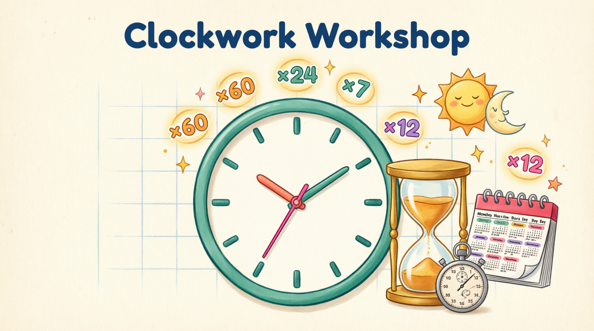

Watch this video and write down the 5 SECRET DIGITS that pop up on screen — then type them to unlock the interactive lesson, answer the questions, and earn ⭐ stars!
10 seconds until the workshop opens…
WELCOME TO THE CLOCKWORK WORKSHOP!
Mission: What Time Is It? ⏰
Convert time measures from smaller to larger units — and vice versa!
⏱️ SECONDS ↔ MINUTES ↔ HOURS — the ×60 steps!
🌞 HOURS ↔ DAYS ↔ WEEKS — ×24 and ×7!
📅 WEEKS ↔ MONTHS ↔ YEARS — ×4 and ×12!

WARM-UP, TIME TRAVELER!
Time Has a Family Too!
💓 second⏰ minute🌞 hour🌙 day📅 week🗓️ month🎉 year
From a single heartbeat to a whole birthday year — time units line up from tiniest to biggest!
SMALL → big = DIVIDEBIG → small = MULTIPLY
Same golden rule as last week — but every time step has its OWN magic number!
THE TIME CHAIN ⛓️
Six Magic Numbers!
sec×60min×60hr×24day×7wk×4mo×12yr
60 • 60 • 24 • 7 • 4 • 12six magic numbers run ALL of time!
Memorize the chain and you can convert any time unit to its neighbor!
THE GOLDEN RULE 🔑
Divide Up, Multiply Down!
SMALL • 120 s➜ 60 ➜BIG • 2 min
BIG • 3 hr➜ × 60 ➜SMALL • 180 min
Small → big: DIVIDE (number shrinks!) • Big → small: MULTIPLY (number grows!)
UNIT 1 ⏱️
Seconds ↔ Minutes — ×60!
60 ticks ⏱️= 60 seconds= 1 minute!
1 min = 60 s — watch the ticks light up around the face!
3 min → s➜ × 60 ➜180 s
240 s → min➜ ÷ 60 ➜4 min
PRACTICE ⏱️ Q1/5 • SECONDS & MINUTES
4 min = ? s
PRACTICE ⏱️ Q2/5 • SECONDS & MINUTES
300 s = ? min
PRACTICE ⏱️ Q3/5 • SECONDS & MINUTES
Which is LONGER: 2 min or 100 s?
PRACTICE ⏱️ Q4/5 • SECONDS & MINUTES
1 min 30 s = ? s
PRACTICE ⏱️ Q5/5 • SECONDS & MINUTES
420 s = ? min
UNIT 2 ⏰
Minutes ↔ Hours — ×60!
minute hand: 1 full turn= 60 minuteshour hand: 1 big step = 1 hr!
1 hr = 60 min — one full turn of the minute hand!
5 hr → min➜ × 60 ➜300 min
180 min → hr➜ ÷ 60 ➜3 hr
PRACTICE ⏰ Q1/5 • MINUTES & HOURS
3 hr = ? min
PRACTICE ⏰ Q2/5 • MINUTES & HOURS
240 min = ? hr
PRACTICE ⏰ Q3/5 • MINUTES & HOURS
Which is LONGER: 2 hr or 150 min?
PRACTICE ⏰ Q4/5 • MINUTES & HOURS
2 hr 15 min = ? min
PRACTICE ⏰ Q5/5 • MINUTES & HOURS
360 min = ? hr
UNIT 3 🌞
Hours ↔ Days — ×24!
🌞🌙
🏠
sunrise → sunrise = 24 hours = 1 day!
3 days → hr➜ × 24 ➜72 hr
96 hr → days➜ ÷ 24 ➜4 days
PRACTICE 🌞 Q1/5 • HOURS & DAYS
2 days = ? hr
PRACTICE 🌞 Q2/5 • HOURS & DAYS
72 hr = ? days
PRACTICE 🌞 Q3/5 • HOURS & DAYS
Which is LONGER: 3 days or 70 hr?
PRACTICE 🌞 Q4/5 • HOURS & DAYS
1 day 6 hr = ? hr
PRACTICE 🌞 Q5/5 • HOURS & DAYS
120 hr = ? days
UNIT 4 📅
Days ↔ Weeks — ×7!
1Mon2Tue3Wed4Thu5Fri6Sat7Sun
7 days = 1 week — count the calendar pages!
6 wk → days➜ × 7 ➜42 days
35 days → wk➜ ÷ 7 ➜5 wk
PRACTICE 📅 Q1/5 • DAYS & WEEKS
5 wk = ? days
PRACTICE 📅 Q2/5 • DAYS & WEEKS
28 days = ? wk
PRACTICE 📅 Q3/5 • DAYS & WEEKS
Which is LONGER: 2 wk or 15 days?
PRACTICE 📅 Q4/5 • DAYS & WEEKS
3 wk 2 days = ? days
PRACTICE 📅 Q5/5 • DAYS & WEEKS
63 days = ? wk
UNIT 5 🗓️
Weeks ↔ Months — ×4!
WEEK 1
WEEK 2
WEEK 3
WEEK 4
4 week-bands fill the month page → 1 month = 4 wk
5 mo → wk➜ × 4 ➜20 wk
32 wk → mo➜ ÷ 4 ➜8 mo
PRACTICE 🗓️ Q1/5 • WEEKS & MONTHS
3 mo = ? wk
PRACTICE 🗓️ Q2/5 • WEEKS & MONTHS
24 wk = ? mo
PRACTICE 🗓️ Q3/5 • WEEKS & MONTHS
Which is LONGER: 2 mo or 9 wk?
PRACTICE 🗓️ Q4/5 • WEEKS & MONTHS
2 mo 2 wk = ? wk
PRACTICE 🗓️ Q5/5 • WEEKS & MONTHS
40 wk = ? mo
UNIT 6 🎉
Months ↔ Years — ×12!
JANFEBMARAPRMAYJUNJULAUGSEPOCTNOVDEC
12 months = 1 year — flip through the whole calendar!
3 yr → mo➜ × 12 ➜36 mo
48 mo → yr➜ ÷ 12 ➜4 yr
PRACTICE 🎉 Q1/5 • MONTHS & YEARS
4 yr = ? mo
PRACTICE 🎉 Q2/5 • MONTHS & YEARS
36 mo = ? yr
PRACTICE 🎉 Q3/5 • MONTHS & YEARS
Which is LONGER: 2 yr or 30 mo?
PRACTICE 🎉 Q4/5 • MONTHS & YEARS
1 yr 5 mo = ? mo
PRACTICE 🎉 Q5/5 • MONTHS & YEARS
60 mo = ? yr
WORKSHOP HAZARDS! ⚠️
Watch the Clock, Cadet! 🕳️
Hazard 1 • Wrong Magic Number
s→min is 60, but hr→day is 24, day→wk is 7, wk→mo is 4, mo→yr is 12! Don't use 60 for everything!
Hazard 2 • Wrong Operation
Big→small MULTIPLIES (3 min = 180 s). Small→big DIVIDES (180 s = 3 min). Swap them and time breaks!
Hazard 3 • Mixed Units
2 min 30 s = 150 s — convert 2 min to 120 s FIRST, then add 30. Gluing digits (230) is a trap!
FINAL QUIZ 🧠 Q1/10
1 min = ? s
FINAL QUIZ 🧠 Q2/10
90 min = ?
FINAL QUIZ 🧠 Q3/10
To convert a SMALLER unit to a LARGER unit, you ___
FINAL QUIZ 🧠 Q4/10
5 days = ? hr
FINAL QUIZ 🧠 Q5/10
2 wk = ? days
FINAL QUIZ 🧠 Q6/10
48 mo = ? yr
FINAL QUIZ 🧠 Q7/10
Which is the LONGEST?
FINAL QUIZ 🧠 Q8/10
To convert a LARGER unit to a SMALLER unit, you ___
FINAL QUIZ 🧠 Q9/10
2 days 12 hr = ? hr
FINAL QUIZ 🧠 Q10/10
Which list goes SMALLEST → LARGEST?
WORKSHOP COMPLETE 🔔
BIG → SMALL = ×SMALL → BIG = ÷60 • 60 • 24 • 7 • 4 • 12
60 s = 1 min60 min = 1 hr24 hr = 1 day7 days = 1 wk4 wk = 1 mo12 mo = 1 yr
⏰ CLOCKWORK COMMANDER!
Keep counting time — see you at the next workshop!
→ Next ← Back F Fullscreen 🖱️ click answers (Lesson) V/M Preview only
01 / 52
⏰ THE CLOCKWORK WORKSHOP
Math 4 • Term 2 • Week 4 — Convert time measures from smaller to larger units & vice versa: s↔min • min↔hr • hr↔day • day↔wk • wk↔mo • mo↔yr
🎙️ V = audition voice • F = fullscreen • M & V disabled inside Lesson Mode.
Enter the 5-digit passcode you collected from the Preview video 👀